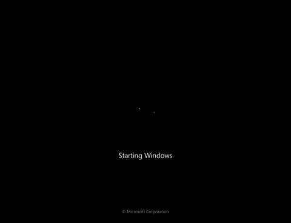

DFX Tweaker | NT6 Edition Reborn
DFX Tweaker NT6 CE (Community Edition) - April 24, 2023
A friend of mine recently saw the news about the NT6 edition, and he was very upset, so...
He wanted to continue the support "officially but unofficially", in better terms, he could develop NT6 edition and just update it on the official website, and I just accepted it, I mean it doesn't bother me, and therefore, is nice to still have feature updates for DFX Tweaker NT6.
And seeing that his name wasn't anywhere, you may think he just wants to keep his name in the void of the anonimate.
DFX Tweaker NT6 is expected to come back at same day as Standard 2.2
So yeah, unexpectedly, NT6 is BACK!
